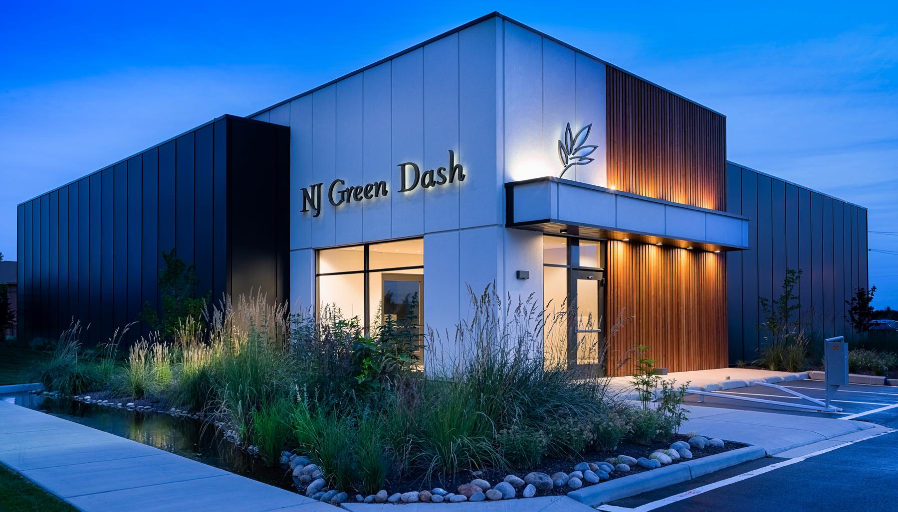
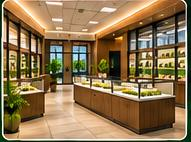
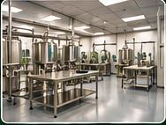

New Jersey Cannabis Facility Consulting
From facility vision to practical development strategy.
NJ Green Dash helps operators organize facility feasibility, space needs, regulatory questions, site considerations and project coordination — from an early idea to an informed next step.
Get a Consultation → Explore sample projects ↗Original concept collection
Featured Facility Studies
Individually developed visual concepts with case studies, 3D layout diagrams and downloadable PDF packages.
Focused facility consulting
Bring your vision into focus.
Discuss renovation feasibility, cultivation-support workflows, manufacturing planning, site circulation and the documentation needed to engage the proper next steps.
Start a Conversation →
Retail fit-outs
Processing and supportIndependent consulting
Coordinating the questions that matter.
Consultant Lucian DeMarco · NJ Green Dash · Brick, New Jersey
All concept portfolio entries are fictional illustrations, not real client commissions, approved plans or regulatory submissions. A proposed facility's feasibility and permissions must be evaluated against the current NJ-CRC and relevant municipal requirements.
Confidentiality & NDA commitment: NJ Green Dash handles commissioned facility consulting under nondisclosure agreements. No actual client identities, addresses, documents or project information are published without express written consent. All portfolio examples are fictional illustrative concepts, not licensed or completed facilities.
Contact NJ Green Dash
Let's discuss your facility needs.
Tell us your business type, expected area, site status and the planning questions you're facing. Consultation inquiries can be sent through the form or directly to our email.
Phone: 732-556-7388
Business email: njgreendash@gmail.com
Address: 471 Mantoloking Rd, Brick, NJ
Owner: Lucian DeMarco · lucianmdemarco@gmail.com